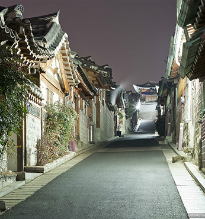

북촌 한옥마을
- 홈페이지
- http://bukchon.seoul.go.kr/
경복궁과 창덕궁, 금원(비원) 사이 북악산 기슭에 있는 한옥 보존지구로 청계천과 종로의 윗동네라는 뜻으로 북촌이라고도 한다. 북촌은 고관대작들과 왕족, 사대부들이 모여서 거주해온 고급 살림집터로 한옥은 모두 조선시대의 기와집이다.원래 이 지역에는 솟을대문이 있는 집 몇 채와 30여 호의 한옥만이 있었으나 일제강점기 말부터 한옥이 많이 지어졌고, 1992년 가회동한옥보존지구에서 해제되고, 1994년 고도제한이 풀리면서 일반 건물들이 많이 들어섰다.